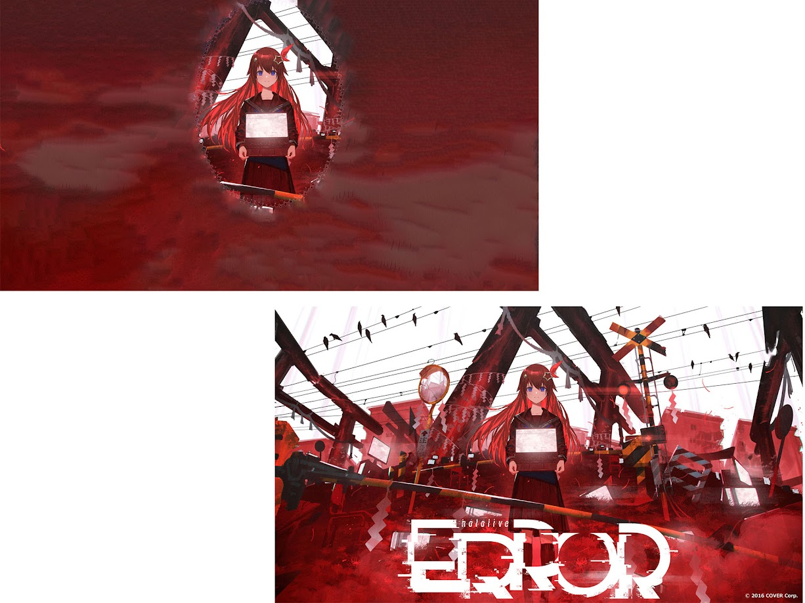
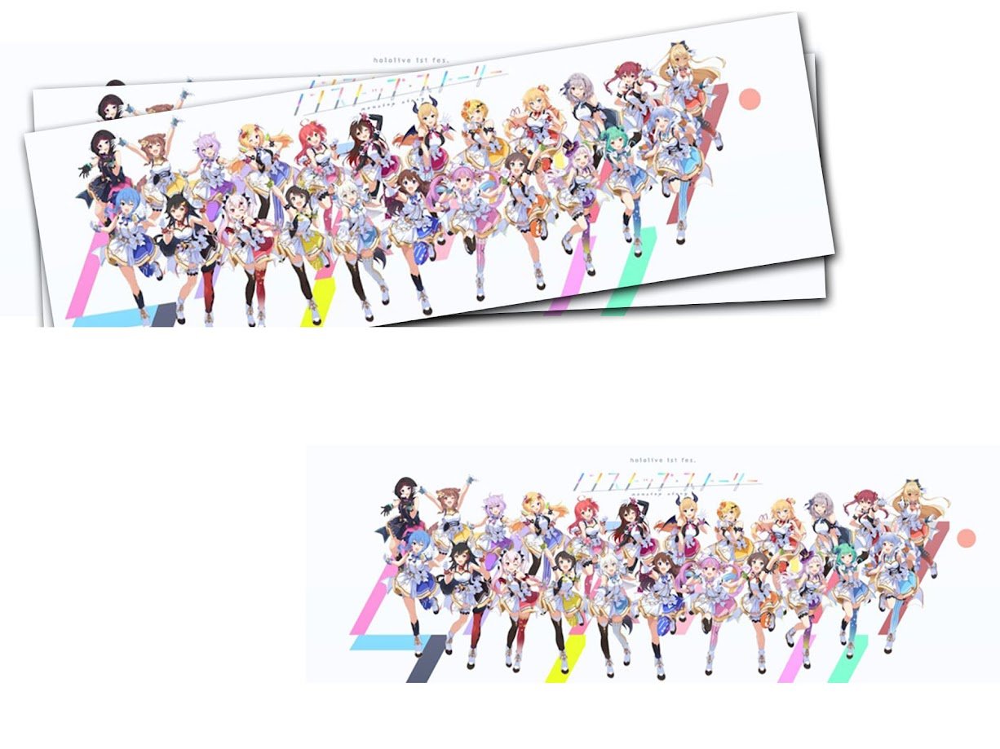
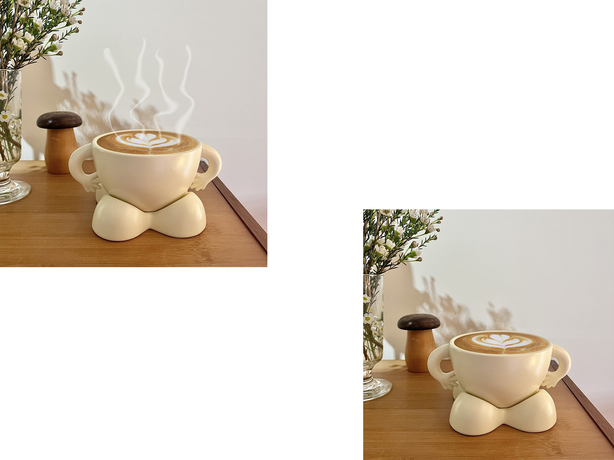
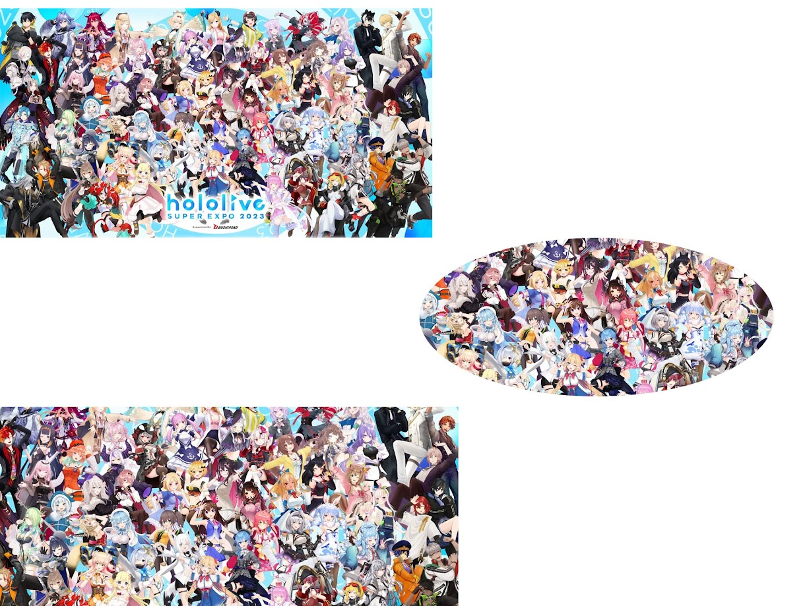
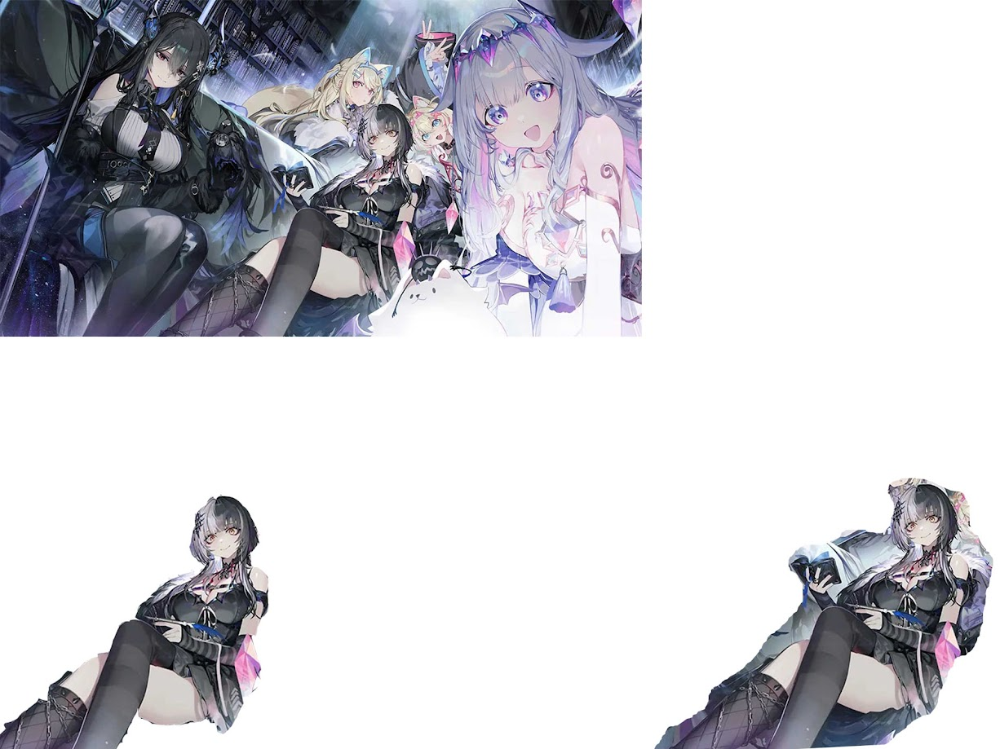
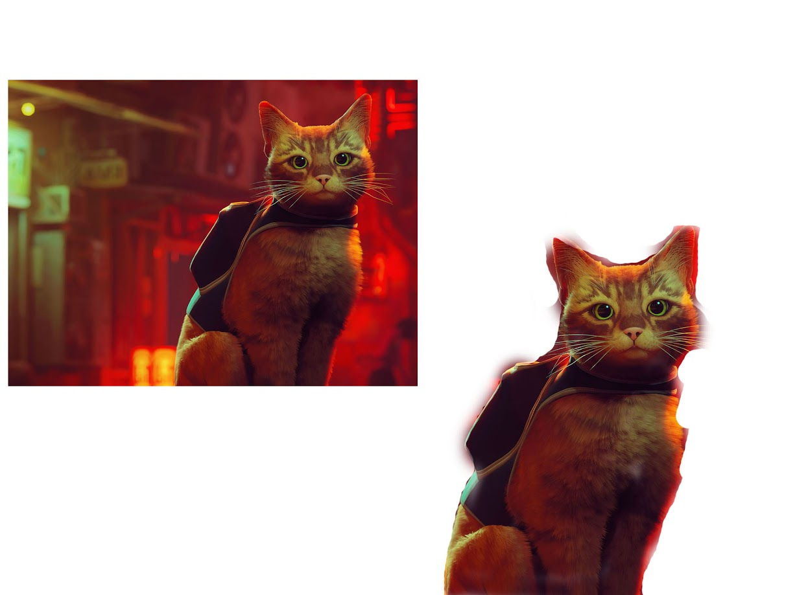

งาน 2 งานการเปลี่ยนภาพสีเป็นภาพโทนซีเปีย

งาน 3 งานการใช้งานเลเยอร์

งานเทคนิคที่ 1 การนำวัตถุออกจากฉากหลัง (Magic Wand Tool)

งานเทคนิคที่ 2 การย้ายวัตถุไปยังฉากหลังอื่น ๆ (Quick Selection Tool)
งานเทคนิคที่ 3 การกำจัดตาแดงบนภาพถ่าย (Red Eye Tool)
งานเทคนิคที่ 4 การกำจัดสิ่งรุงรังบนภาพออกไป (Clone Stamp Tool)

งานเทคนิคที่ 5 การลบริ้วรอย (Patch Tool)
งานเทคนิคที่ 6 การปรับฉากหลังให้เบลอ

งานเทคนิคที่ 7 การบิดภาพเพื่อนำไปวางบนวัตถุ
งานเทคนิคที่ 8 การบิดโครงร่าง

งานเทคนิคที่ 9 การปรับสีท้องฟ้า

งานเทคนิคที่ 10 การปรับแนวเส้นที่ลาดเอียงให้ตรง

งานเทคนิคที่ 11 การสร้างภาพไฟฟ้าช็อต

งานเทคนิคที่ 12 การสร้างภาพละออง Fairy

งานเทคนิคที่ 13 การสร้างภาพฝนตก
งานเทคนิคที่ 14 การสร้างโลโก้ด้วย Shape

งานเทคนิคที่ 15 การสร้างภาพกระดาษปลิว

งานเทคนิคที่ 16 การสร้างตัวอักษรแบบรัศรี

งานเทคนิคที่ 17 การสร้างตัวอักษรน้ำแข็ง
งานเทคนิคที่ 18 การสร้างตัวอักษรตามเส้น Path

งานเทคนิคที่ 19 การสร้างตัวอักษรวงกลม
งานเทคนิคที่ 20 การสร้างตัวอักษาแบบการ์ตูน

งานเทคนิคที่ 21 การสร้างกรอบรูปเน้นเฉพาะจุด

งานเทคนิคที่ 22 การสร้างกรอบรูปแบบซ้อนทับ

งานเทคนิคที่ 23 การสร้างกรอบรูปนูนจากภาพ

งานเทคนิคที่ 24 การสร้างกรอบรูปการ์ตูน
งานเทคนิคที่ 25 การสร้างกรอบรูปแบบหยัก

งานเทคนิคที่ 26 การรีทัชลบสิว
งานเทคนิคที่ 27 การรีทัชส่วนที่ไม่ต้องการ

งานเทคนิคที่ 28 การเซนเซอร์ภาพด้วยโมเสก
งานเทคนิคที่ 29 การทำเงาสะท้อนบนพื้นน้ำ

งานเทคนิคที่ 30 การสร้างไอน้ำบนแก้วกาแฟ

งานเทคนิคที่ 31 การตัดภาพด้วยเครื่องมือ Marquee

งานเทคนิคที่ 32 การตัดภาพด้วยเครื่องมืออิสระ Lasso

งานเทคนิคที่ 33 การตัดภาพด้วย Quick Selection Tool
งานเทคนิคที่ 34 การตัดภาพด้วย Magic Wand Tool
งานเทคนิคที่ 35 การเลือกพื้นที่ด้วย Quick Mask
